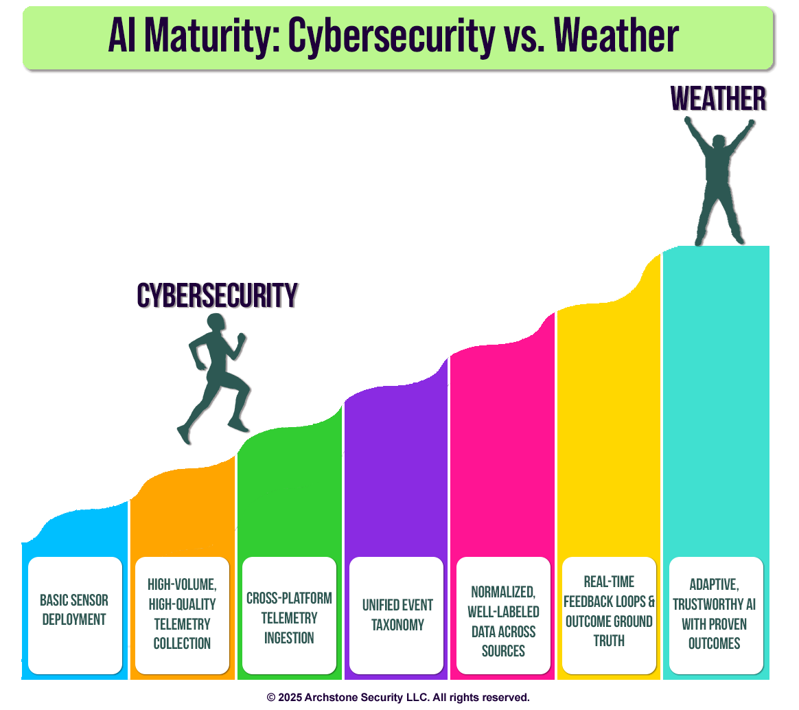

Don't buy products you don't need for CMMC!
Don't buy products you don't need for CMMC!
AI is being touted as the future of threat detection, but its limitations are often overlooked. A useful benchmark is weather forecasting — one of the most mature and well-funded uses of AI. Despite decades of investment, petabytes of high-quality data, and physics-based models validated against reality, weather AI still gets predictions wrong.
Now compare that to cybersecurity AI:
- Data quality. Weather benefits from standardized, structured, physics-grounded data going back to the 1940s. Cybersecurity data is fragmented, inconsistently labeled, and often lacks a common taxonomy.
- Feedback loops. Weather models are constantly validated against observable outcomes. In cybersecurity, ground truth is ambiguous, feedback is weak, and outcomes are hard to measure.
- Adversaries. Weather doesn’t lie. Cyber attackers actively manipulate signals and attempt to deceive detection systems.
The takeaway: the challenge isn’t the algorithms. It’s the foundation. Without normalized telemetry, shared taxonomies, and validated outcomes, cybersecurity AI will remain brittle, error-prone, and far less trustworthy than many vendors would like us to believe.
AI has a role to play in security, but it can’t replace the fundamentals we haven’t built yet.
